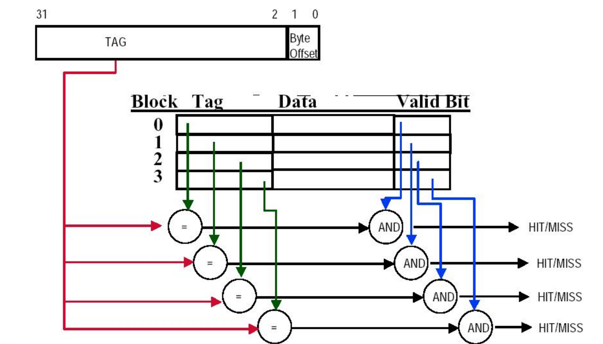
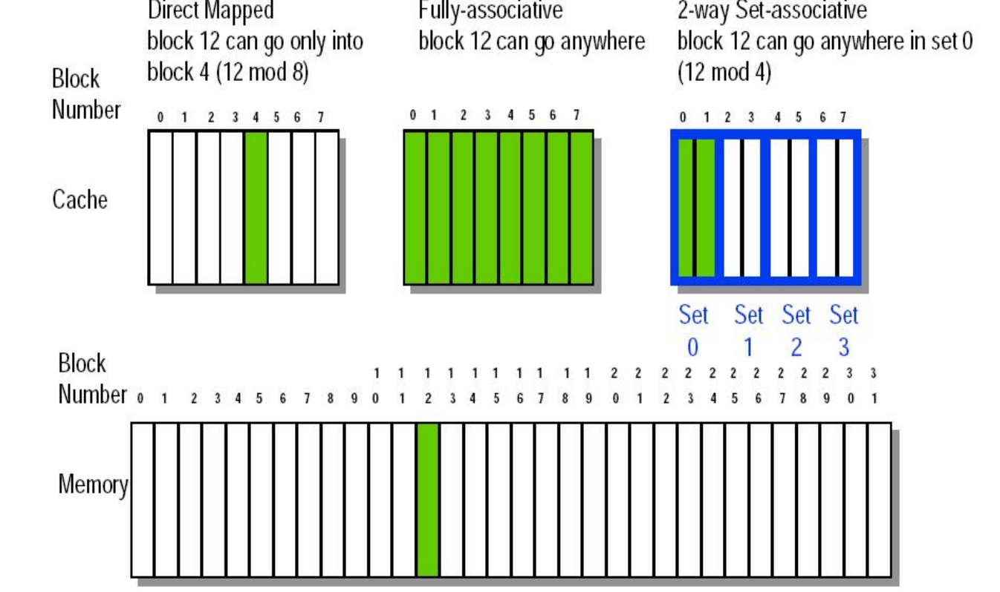
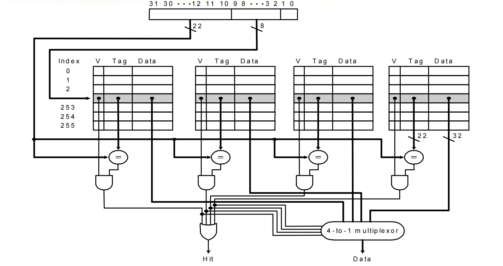
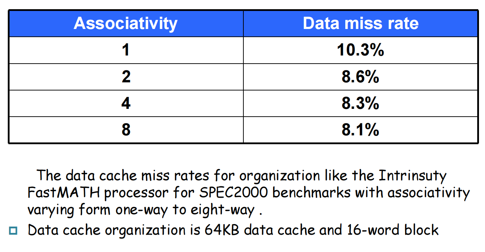

计算机组成5-2:Cache放置策略的演进
第一部分：全相联缓存 (Fully Associative Cache) —— 极致的灵活性
既然直接映射因为“位置固定”而导致冲突，那么一个最自然的想法就是：废除所有位置限制！
1.1 设计哲学：自由放置
- 放置策略：一个从主存取来的块，可以被放置到缓存中的任何一个空闲位置。
- 生活化理解：这就像一个不划座位的开放式停车场，任何一辆车可以停在任何一个空的车位上。
- 优势：完全消除了冲突缺失。只要缓存中还有一个空位，就不会因为地址映射冲突而发生缺失。在容量相同的情况下，全相联缓存的命中率是所有放置策略中最高的。
1.2 带来的挑战：如何找到我的数据？(Block Identification)
自由是有代价的。在一个可以直接“对号入座”的直接映射缓存中，我们只需要比较一次标签。但在一个“随心所欲”的全相联缓存中，当CPU给出一个地址时，我们怎么知道它对应的块在不在缓存里？又在哪个位置呢？
答案是：暴力搜索。 我们必须将CPU发出的地址的标签部分，与缓存中所有行的标签，进行并行的比较。
- 地址划分：
- 在一个全相联缓存中，地址不再有“索引”位。它只被划分为两部分：标签（Tag）和块内偏移（Byte Offset）。标签部分包含了几乎所有的地址位。
- 硬件实现：
- 假设缓存有
N行，那么就需要N个比较器，同时工作。 - 所有比较器的结果会通过一个巨大的OR门（或类似的逻辑）汇总，来判断是否发生了命中（只要有一个比较器匹配成功就算命中）。
- 如果命中，还需要相应的逻辑来选出匹配成功的那一行的数据。
- 假设缓存有

1.3 成本与性能的权衡
- 优点：命中率最高。
- 缺点：
- 硬件成本极高：大量的并行比较器会消耗巨大的芯片面积和功耗。这使得构建一个大容量的全相联缓存变得不切实际。
- 命中时间可能更长：虽然比较是并行的，但
N个比较器的信号最终要汇总，这个过程本身就有延迟，而且随着N的增大，延迟也会增加。
结论：全相联缓存提供了一种理论上的最优命中率，但其硬件代价过于高昂，通常只用于一些容量非常小的特殊缓存中，例如我们后面会讲到的TLB（Translation-Lookaside Buffer）。它代表了灵活性谱系的一个极端。
第二部分：组相联缓存 (Set-Associative Cache)
我们现在有了两个极端：
- 直接映射：1路（1-way）相联。每个块只有一个选择，硬件简单快速，但冲突率高。
- 全相联：N路（N-way）相联（假设缓存有N块）。每个块有N个选择，冲突率最低，但硬件复杂昂贵。
有没有一种折中的方案，既能显著降低冲突，又不会带来无法接受的硬件成本？这就是组相联的智慧。
2.1 设计哲学：有限的自由
- 核心思想：将缓存中的块分成若干个组（Set）。每个主存块，仍然像直接映射一样，被唯一地映射到一个组。但是，在这个组内部，它可以被放置在任何一个空闲的块位置上。
- 生活化理解：这就像一个电影院，你的票上只写了“第5排”，但没有指定具体座位。你只需要去第5排，然后在这一排里随便找个空位坐下即可。
- 映射规则： $$ (\text{Cache Set Index}) = (\text{Memory Block Address}) \pmod (\text{Number of Sets in Cache}) $$
- 术语：如果一个组内包含
k个块，我们就称之为k路组相联（k-way set-associative）。
2.2 块识别：组内并行搜索
在组相联缓存中寻找一个数据，结合了直接映射和全相联的特点：
- 定位组（类似直接映射）：使用CPU地址中的索引（Index）位，直接定位到缓存中的某一个组。
- 组内搜索（类似全相联）：将CPU地址中的标签（Tag）位，与该组内所有
k个块的标签进行并行的比较。 - 命中判断：如果组内有任何一个块的标签匹配，并且有效位为1，则为命中。

- 地址划分：
- 标签（Tag）：高位地址，用于组内比较。
- 索引（Index）：中间地址，用于选择组。
- 块内偏移（Byte Offset）：低位地址，用于在块内选数据。

2.3 性能与成本的平衡艺术
- 相联度（Associativity），即
k的值，是组相联缓存设计的核心参数，它直接体现了性能和成本的权衡：- 增加相联度：
- 好处：减少冲突缺失，提高命中率。
- 坏处：
- 增加硬件成本：需要更多的并行比较器和更复杂的数据选择逻辑。
- 增加命中时间：并行比较和选择的延迟会略微增加。
- 增加功耗：每次访问都需要驱动
k个比较器工作。
- 增加相联度：
- 现实中的选择：现代CPU的L1缓存通常采用较低的相联度（如4路或8路），以追求极低的命中时间。而L2/L3缓存，由于对命中时间不那么敏感，但对命中率要求更高，因此会采用更高的相联度（如16路或更高）。

第三部分：缓存设计的第三个核心问题——块替换策略 (Block Replacement)
在直接映射缓存中，当发生冲突缺失时，替换策略是唯一的——只有一个“受害者”。但在组相联和全相联缓存中，当一个组满了之后发生缺失，我们必须决定牺牲该组中的哪一个块来为新块腾出空间。这就是替换策略要解决的问题。一个好的替换策略，应该尽可能地保留那些“未来最有可能被访问”的块。
3.1 最近最少使用（Least Recently Used, LRU）
- 策略：替换掉那个在过去最长时间内没有被访问过的块。
- 理论基础：LRU是时间局部性原理的直接应用。它假设，最近被访问过的块，在将来也最有可能被访问，所以应该保留它们。
- 实现：
- 2路组相联：实现非常简单。每个组只需要一个**“使用位”**。当访问第0个块时，将该位置
0；当访问第1个块时，将该位置1。替换时，只需选择与该位值相反的那个块即可。 - 更高相联度：实现变得复杂。需要为每个组维护一个访问顺序的记录。例如，一个4路组相联的组，需要用硬件实现一个4个元素的“访问时间排序链表”，每次访问都要更新这个链表，成本很高。因此，在实际硬件中，通常使用伪LRU（Pseudo-LRU）等简化算法来逼近LRU的效果。
- 2路组相联：实现非常简单。每个组只需要一个**“使用位”**。当访问第0个块时，将该位置
- 优点：性能通常是最好的，因为它很好地利用了时间局部性。
- 缺点：硬件实现复杂，且随着相联度的增加，复杂度急剧上升。
3.2 随机替换 (Random)
- 策略：当需要替换时，随机选择组中的一个块作为“受害者”。
- 实现：硬件实现非常简单，只需要一个随机数（或伪随机数）生成器。
- 优点：硬件成本低，实现简单。
- 缺点：性能略逊于LRU，因为它可能会“不幸地”换出一个马上就要被再次访问的块。但在高相联度下，其性能与LRU的差距并不大，因此在一些设计中被采用。
3.3 先进先出 (First-In, First-Out, FIFO)
- 策略：替换掉那个最早进入该组的块。
- 实现：需要为每个组维护一个进入的顺序，类似一个循环队列。
- 缺点：性能通常最差。因为它没有利用局部性原理。一个很早进入缓存但被频繁访问的热点数据块，可能会被一个刚刚进入但只被访问一次的冷数据块替换掉。
小结：LRU是理论上性能最好的替换策略，但实现成本高。在实际设计中，需要在LRU的性能优势和随机/FIFO的简单性之间做出权衡。
第四部分：缓存设计的第四个核心问题——写策略 (Write Strategy)
到目前为止，我们主要讨论了读操作。但CPU的写操作（如store指令）带来了另一个关键的挑战：如何保证缓存中的数据和主存中的数据保持一致？
4.1 写命中 (Write Hit) 的两种策略
当CPU要写入的数据，其地址在缓存中命中时，我们有两种选择：
-
写穿 (Write-Through)
- 策略：数据同时写入缓存块和下一级的存储器（如主存）。
- 优点：
- 实现简单：控制逻辑简单。
- 一致性好：主存永远保持着最新的数据，这对于多处理器系统和I/O设备的数据一致性非常有利。
- 缺点：
- 速度慢：每次写操作都必须等待慢速的主存写入完成，这会极大地拖慢CPU。
- 带宽占用高：频繁的写操作会占用大量的内存总线带宽。
- 优化：写缓冲 (Write Buffer)
- 为了缓解写穿策略的速度瓶颈，现代处理器会引入一个写缓冲。CPU将要写入的数据和地址快速地扔进这个小队列（通常是FIFO）中，然后就可以继续执行其他指令了。写缓冲器会在后台，慢慢地将数据写入主存。
- 这可以有效地隐藏大部分写操作的延迟，除非CPU的写操作速度太快，导致写缓冲被填满，此时CPU就不得不暂停（Write Stall），等待写缓冲清空。
-
写回 (Write-Back)
- 策略：数据只写入缓存块。同时，用一个**“脏位”（Dirty Bit）**来标记这个块已经被修改过。
- 这个“脏”块会一直留在缓存中，直到它被替换策略选中，需要被换出时，硬件才会检查其脏位。如果脏位为1，才将该块的内容写回到下一级存储器。
- 优点：
- 速度快：写操作以缓存的速度完成，CPU无需等待主存。
- 带宽占用低：如果一个块在被换出之前被多次写入（非常常见），那么实际上只需要在最后一次性地写回主存，大大节省了内存带宽。
- 缺点：
- 控制逻辑复杂：需要实现脏位和在替换时写回的逻辑。
- 一致性问题：在任何时刻，主存中的数据可能是“旧”的，这给多处理器缓存一致性带来了巨大的挑战（需要复杂的缓存一致性协议，如MESI）。
4.2 写缺失 (Write Miss) 的两种策略
当CPU要写入的地址在缓存中缺失时，同样有两种选择：
-
写分配 (Write Allocate) / 先取后写 (Fetch on Write)
- 策略：首先，像读缺失一样，将包含目标地址的整个块从主存中加载到缓存中。然后，再像写命中一样，对这个新加载的缓存块执行写入操作。
- 逻辑基础：利用了空间局部性。既然要写这个地址，那么很可能马上就要读/写它附近的地址，所以先把整个块取进来是值得的。
- 通常与写回策略搭配使用。
-
非写分配 (No-Write Allocate) / 写绕过 (Write Around)
- 策略：数据直接写入下一级存储器（主存），而不将对应的块加载到缓存中。
- 逻辑基础：如果一个程序只是大片地初始化内存而后续很少读取，那么把这些块加载到缓存中纯属浪费缓存空间和带宽。
- 通常与写穿策略搭配使用。
总结：写策略的选择，是在性能、带宽和一致性复杂性之间的权衡。高性能处理器通常在L1 Cache上采用写回 + 写分配的策略，以最大化性能和带宽利用率，并通过复杂的硬件协议来解决一致性问题。
总结与展望
我们完成了对缓存设计四大核心问题的全面探讨：
- 块放置：从直接映射的“刚性”，到全相联的“自由”，再到组相联的“平衡”。
- 块识别：通过Tag, Index, Offset的地址划分，以及比较器和有效位实现。
- 块替换：在LRU的性能和随机/FIFO的简单性之间权衡。
- 写策略：在写穿的一致性/简单性和写回的性能/带宽效率之间权的全衡。
我们现在应该深刻地认识到，一个看似简单的Cache，其背后是无数个设计决策的精妙组合。每一个决策，都直接影响着最终的AMAT——那个衡量存储系统性能的黄金指标。